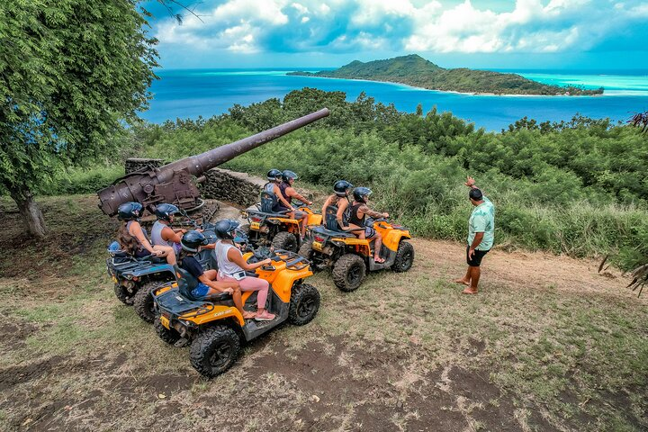
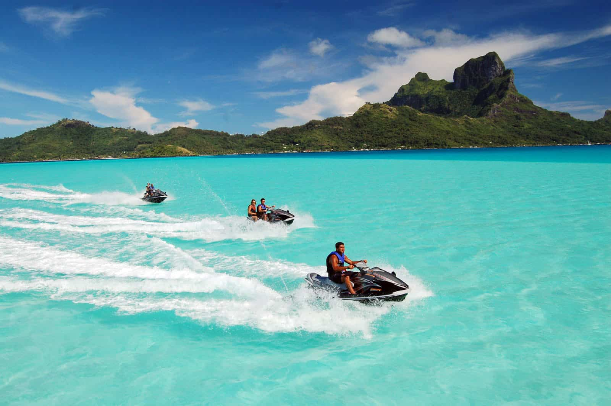
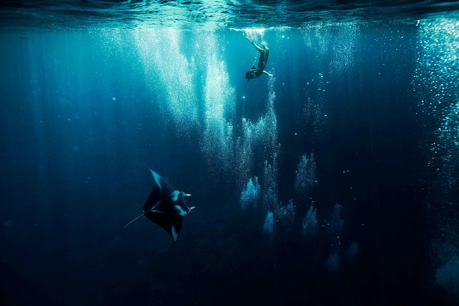
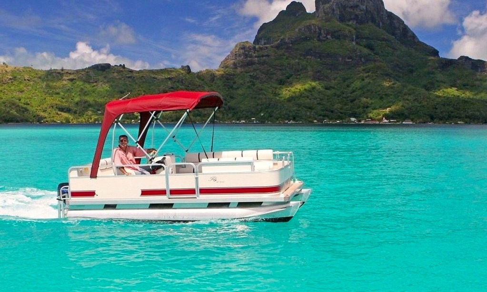

ATV: Ride around the island of Bora Bora on one of our super charged ATV's. This is one of the most popular services we provide for a reason. You will get to engulf yourself in the many different sceneries nature has put here for us.
Jet Ski: Who doesn't want to float in the clear blue of Bora Bora? Through the use of our many Jet Ski services you will get to ride the wave and experience the deep sea up with the multitude of marine life up close and personal.
Snorkeling: You love fish huh? Well snorkeling is the perfect way to get up close and see the marine life. Stingrays, Fish, and Coral Reefs, oh my!
Boat Rental: Maybe you don't want to travel the sea on a small jet ski and get around the traditional way. With our many boat rental services you will be able to rent a boat and sail the clear blue on your own.
I encourage you to explore Bora Bora as it is the greatest getaway on Earth... There are so many activities and life changing sceneries for you to experience. When planning your next trips make sure Bora Bora is at the top of your list.
(To return to the homepage click Bora Bora above)